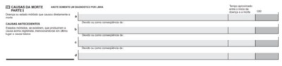

Questão 1 · Medicina Preventiva · Epidemiologia · Legislação sobre registros públicos Lei n 60151973 · 4000193857No nal do dia de atendimento na Unidade Básica Vila Madalena, a Dra. Marlúcia é chamada pela enfermeira Carla para comparecer à casa do Sr. José, um morador da região que acabara de falecer. Ele era acompanhado por toda a Equipe de Saúde da Família desde que sofreu um Acidente Vascular Encefálico, há 6 anos, que o deixou acamado e completamente dependente para as atividades básicas e instrumentais da vida diária. A morte ocorreu durante o dia, junto da família. Acerca da emissão da Declaração de Óbito (DO), como a Dra. Marlúcia deve proceder?
A Deve emitir a DO da própria Unidade de Saúde e solicitar que a enfermeira Carla leve a via amarela para os familiares.
B Não deve emitir a DO, já que não presenciou o óbito, solicitando que o cadáver seja encaminhado ao Serviço de Verificação de Óbitos (SVO) do Município, para ser submetido ao exame necroscópico por patologista, que determinará a causa mortis e se responsabilizará pela emissão da DO.
C Deve emitir a DO, após exame direto do corpo, caso não sejam encontradas evidências de morte por causa externa ou suspeita, já que o paciente apresentava condição de saúde conhecida pela equipe e estava em acompanhamento na UBS. Após a emissão, a via rosa deve ser arquivada no prontuário do paciente na Unidade Básica de Saúde.
D Deve solicitar que a Enfermeira Carla emita a DO, após exame direto do corpo, pois se trata de paciente cujo estado de saúde é conhecido por toda a equipe, portanto todos estão legalmente aptos a emitir esse documento.
Questão 2 · Medicina Preventiva · 4000189520O Sistema de Informação de Agravos de Noti cação (Sinan) foi criado em 1990 pelo Centro Nacional de Epidemiologia com o apoio do Departamento de Informática do SUS (Datasus), tendo como nalidade a Vigilância Epidemiológica de determinados agravos. Em relação ao Sinan, é correto afirmar que
A o instrumento para a coleta de dados do Sinan é a Ficha Individual de Notificação (FIN), que deve ser preenchida exclusivamente pelo médico e encaminhada para a unidade de vigilância epidemiológica dos Municípios, Estados e/ou Ministério da Saúde.
B para alguns agravos, é necessário realizar a Notificação Positiva de Não Agravo, que é a notificação da não ocorrência de determinadas doenças de notificação compulsória na área de abrangência da Unidade de Saúde.
C possui um banco de dados epidemiológicos que fornece informações sobre a incidência, prevalência e letalidade de um conjunto de doenças e agravos que constam na Lista de Notificação Compulsória.
D a comunicação de doenças que possam gerar epidemias é de responsabilidade do paciente e da recepção do órgão de saúde.
Questão 3 · Declaração de óbito DO Atestado de óbito · 4000186946A respeito da Declaração de Óbito, pode-se afirmar que
A quando o médico não souber ou não tiver condições de definir a causa mortis, deve necessariamente enviar o corpo ao Instituto Médico Legal.
B o médico poderá atestar o óbito sem tê-lo verificado pessoalmente, desde que esteja baseado em informações confiáveis e fidedignas.
C é dever do médico atestar óbito de paciente ao qual vinha prestando assistência.
D no caso de morte violenta ou suspeita, é facultativo ao médico assistente atestar o óbito ou não.
E é permitido ao médico cobrar remuneração pelo fornecimento do atestado de óbito somente quando isto ocorrer fora do horário habitual de trabalho.
Questão 4 · Declaração de óbito DO Atestado de óbito · 4000186126Um paciente de 72 anos, portador de hipotireoidismo, foi admitido no pronto atendimento do Hospital Universitário Cajuru com um quadro de AVE extenso cursando com rebaixamento do nível de consciência. Após 1 mês internado, apresentou um quadro de tromboembolismo pulmonar, enquanto recebia o seu tratamento com drogas anticoagulantes evoluiu com quadro súbito de hemorragia digestiva alta e evoluiu com parada cardiorrespiratória refratária mesmo após 40 minutos de manobras de ressuscitação, sendo constatado óbito. Considerando a Declaração de Óbito como a principal fonte de dados para o Sistema de Informação de Mortalidade, assinale a alternativa que contém o preenchimento CORRETO da parte I. das causas da morte, considerando de cima para baixo.

A Parada Cardiorrespiratória – Hemorragia Digestiva Alta – Trombo Embolismo Pulmonar – Acidente Vascular Encefálico.
B Parada Cardiorrespiratória – Trombo Embolismo Pulmonar – Hemorragia Digestiva Alta – Acidente Vascular Encefálico.
C Acidente Vascular Encefálico – Hipotireoidismo – Hemorragia Digestiva Alta.
D Hipotireoidismo – Acidente Vascular Encefálico – Tromboembolismo Pulmonar – Hemorragia Digestiva Alta.
E Hemorragia Digestiva Alta – Trombo Embolismo Pulmonar – Acidente Vascular Encefálico.
Questão 5 · Declaração de óbito DO Atestado de óbito · 4000186122Luís está atendendo na Unidade de Saúde de sua cidade e é chamado para emitir uma declaração de óbito (DO) de um paciente que faleceu em casa e que seu colega Mário acompanhava já em cuidados paliativos. Luís verifica o prontuário no qual estava descrito que o paciente acompanhava por Insu ciência Cardíaca decorrente de um Infarto há 5 anos. Sobre a emissão desta declaração, é CORRETO afirmar:
A Como se tratava de um paciente de outro médico, Luís está impedido de emitir a DO, devendo encaminhar o corpo ao Instituto Médico Legal.
B Luís pode preencher a DO desde que assinale no item ‘Recebeu assistência médica durante a doença que ocasionou a morte?’: NÃO.
C Se Luís verificar sinais de violência, deverá preencher a DO como causa externa.
D Luís deverá realizar visita domiciliar, verificar o óbito e deverá assinar a DO como médico substituto.
E Luís deverá preencher a DO colocando todos os números dos CIDs pelos quais o paciente era acompanhado.
Questão 6 · Declaração de óbito DO Atestado de óbito · 4000185972Homem de 72 anos de idade está internado para tratamento antibiótico de broncopneumonia. No terceiro dia de internação, por piora do quadro clínico e laboratorial, é transferido à unidade de terapia intensiva para melhor controle clínico e expansão do espectro antibiótico. Apesar das medidas implementadas, o paciente desenvolve hipotensão refratária a altas doses de drogas vasoativas e evolui a óbito. O paciente apresentava antecedentes de câncer de próstata em tratamento com hormonioterapia, doença pulmonar obstrutiva crônica e diabetes mellitus. Como deve ser preenchida a primeira linha da Parte I do Atestado de Óbito?
A Disfunção de múltiplos órgãos.
B Choque Séptico.
C Broncopneumonia.
D Câncer de próstata.
E Efeitos adversos de outras drogas.
Questão 7 · Declaração de óbito DO Atestado de óbito · 4000185360Assinale a alternativa correta em casos de mortes naturais sem assistência médica, ocorridos em domicílio, em município que conta com Instituto Médico Legal (IML) e Serviço de Verificação de Óbito (SVO).
A A declaração de óbito (DO) deve ser preechida por médico do SVO.
B Qualquer médico pode preencher a DO.
C É obrigação do médico de um serviço de urgência e emergência preencher a DO.
D O responsável pelo falecido, acompanhado de duas testemunhas, deve comparecer ao cartório do registro civil, que preenche as três vias da DO.
E A DO deve ser preenchida por um médico do IML.
Questão 8 · Declaração de óbito DO Atestado de óbito · 4000185359Um senhor é atropelado por um carro. É internado com lesões de órgãos internos e evolui a óbito após 5 dias por infecção generalizada. Assinale a alternativa que apresenta a causa básica do óbito.
A Septicemia.
B Parada cardiorrespiratória.
C Lesão de órgãos internos.
D Choque séptico.
E Vítima de atropelamento por veículo motorizado.
Questão 9 · Medicina Preventiva · 4000185211Um rapaz de 18 anos de idade, motoboy, tinha acabado de ser registrado em seu primeiro emprego e pilotava sua moto em direção ao local de trabalho para iniciar suas entregas quando foi, repentinamente, atingido por outro veículo automotor, o qual o lançou a 10 metros de distância contra um muro. Ele foi resgatado pelo serviço móvel de urgência e levado ao hospital municipal da região. Sofreu cirurgia devido à fratura de múltiplas costelas, à fratura de processo odontóide e de tíbia esquerda. Com relação a essa situação hipotética, assinale a alternativa correta.
A O acidente deve ser notificado apenas ao sistema de informação de agravos de notificação (SINAN).
B O hospital deve realizar apenas a comunicação de acidente de trabalho (CAT), não sendo necessário realizar a notificação ao SINAN, visto não ser um acidente com material biológico.
C O hospital deve realizar ambas as notificações SINAN, em até 24 horas, e realizar CAT.
D O caso não deve ser notificado, visto que o entregador ainda não estava em seu horário de trabalho, não podendo ser considerado um acidente de trabalho.
E O caso deve ser notificado apenas como acidente de trânsito grave, cabendo ao Detran a responsabilidade.
Questão 10 · Medicina Preventiva · 4000185210Acerca das recentes atualizações na lista nacional de agravos de notificação, julgue os itens a seguir. I. As síndromes inflamatórias multissistêmicas associadas à covid-19 em adultos e em crianças, SIM-A e SIM-P, respectivamente, passaram a figurar na lista de agravos de notificação do Ministério da Saúde, com notificação imediata. II. A síndrome gripal por covid-19 se manteve na lista geral de agravos, mas, devido à diminuição dos casos e ao esfriamento da pandemia, passou a ser de notificação semanal. III. A doença de Chagas crônica, a partir de 2020, passou a gurar na lista de agravos de noti cação, devendo ser noti cada com periodicidade imediata, em até 24 horas. Com essa alteração, tanto o quadro agudo quanto o quadro crônico da doença causada pelo Trypanosoma cruzi passam a ser obrigatoriamente noti cados em todo o território nacional. IV. Em 2021, a síndrome congênita associada à infecção pelo vírus Zika passou a ser de noti cação compulsória, adotando- se a periodicidade imediata, ou seja, até 24 horas para notificação. Assinale a alternativa correta.
A Nenhum item está certo.
B Apenas o item I está certo.
C Apenas o item II está certo.
D Apenas o item III está certo.
E Apenas o item IV está certo.
Questão 11 · Medicina Preventiva · 4000185197Um paciente internado em UTI após cirurgia neurológica por fratura de base de crânio acompanhado de paralisia facial total devido à briga no bar e à queda com TCE está em seu 5.o dia de internação e evolui com pneumonia nosocomial, sepse e vai a óbito no 11.o dia de internação. Nessa situação hipotética, a declaração de óbito deverá ser assinada por
A médico plantonista da UTI.
B médico diarista da UTI.
C neurocirurgião que realizou a cirurgia.
D médico do SVO.
E médico do IML.
Questão 12 · Outros · Declaração de óbito DO Atestado de óbito · 4000184763Mulher, 30 anos, primigesta, apresentou dor em baixo ventre e hemorragia transvaginal. Três horas depois evoluiu para abortamento espontâneo, sendo submetida à curetagem na 15ª semana de gestação em regime ambulatorial. Três dias depois apresentou um quadro séptico, permanecendo internada por treze dias, período em que foi infectada po r COVID-19. Evoluiu para insu ciência renal, coma e óbito. No prontuário constava que seu lho apresentou hipóxia intrauterina e prematuridade extrema. Pode-se a rmar que a causa básica que deve constar da declaração de óbito (D.O.) para a mãe e seu filho deve ser respectivamente:
A aborto espontâneo / não possui D.O.
B COVID-19 / não possui D.O.
C COVID-19 / prematuridade extrema.
D aborto espontâneo / prematuridade extrema
Questão 13 · Medicina Preventiva · 4000184733Homem 54 anos, lavrador, residente na área de abrangência Unidade Básica de Saúde a (UBS) com Estratégia de Medicina Família do município X, apresenta perda de peso acentuada nos últimos três meses. Teve diagnostico de câncer de estomago, no inicio do quadro, e foi submetido à cirurgia e sessões de radioterapia, que foram suspensas há um mês após constatação de metástases em vários órgãos. O paciente evoluiu para um quadro de caquexia e vinha recebendo tratamento sob regime domiciliar, pelo médico da Equipe de Saúde da Família desta UBS, que o visita regularmente em casa. A família procura este médico na UBS e comunica que, após a última visita, o paciente evoluiu com falta de ar, vindo a falecer no domicílio.
A O médico da família não emitirá a DO, considerando-se que embora ele prestasse assistência médica ao falecido, conhecia o quadro clínico apresentado nos últimos meses, bem como o prognóstico do quadro, o óbito foi no domicilio sem assistência médica.
B O médico da família deve proceder a um cuidadoso exame externo do cadáver, a fim de afastar qualquer possibilidade de causa externa, constatar o óbito e emitir a DO anotando, na variável causa, "óbito sem assistência médica" e no campo 59 da Declaração de Óbito "não há sinais externos de violência".
C O corpo deverá ser encaminhado ao IML. Como é morte natural, o médico deve esgotar todas as possibilidades para formular a hipótese diagnóstica, inclusive com anamnese e história colhida com familiares. Caso persista dúvida e na localidade exista SVO, o corpo deverá ser encaminhado para esse serviço. Caso contrário, o médico deverá emitir a DO esclarecendo que a causa é desconhecida.
D O médico da Estratégia Saúde da Família (ESF), do Programa de Internação Domiciliar e outros assemelhados, deverá verificar pessoalmente o cadáver, após ter sido comunicado do óbito e emitirá a DO, considerando-se que prestava assistência médica ao paciente, conhece o quadro clínico, bem como o seu prognóstico.
Questão 14 · Declaração de óbito DO Atestado de óbito · 4000184604Homem, 49 anos, motorista de caminhão, se envolveu em um acidente enquanto trabalhava, sofreu fraturas múltiplas, foi internado e submetido à cirurgia. Evoluía adequadamente, mas adquiriu infecção hospitalar, vindo a falecer, 12 dias depois, por septicemia no CTI. Considerando os dados disponíveis, assinale a alternativa que apresenta CORRETAMENTE a causa básica da morte e quem deve fornecer a Declaração de Óbito.
A Acidente de trânsito e o intensivista.
B Septicemia e o IML.
C Acidente de trânsito e o IML.
D Septicemia e o intensivista.
Questão 15 · Medicina Preventiva · 4000184465Um homem de 75 anos de idade foi levado ao pronto-socorro mais próximo de sua casa com quadro de piora d a insu ciência cardíaca congestiva com dispneia súbita. Evoluiu a óbito três dias após a internação. Era tabagista (40 maços-ano). Teve diagnóstico de estenose de mitral aos 30 anos de idade e febre reumática na infância. A imagem a seguir mostra parte da declaração de óbito desse homem. Com base nesse caso, assinale a alternativa apresenta o melhor preenchimento dessa declaração de óbito.

A Parte I: a. insuficiência cardíaca; b. estenose de valva mitral; c. febre reumática; d. tabagismo.
B Parte I: a. dispneia intensa; b. estenose de valva mitral; c. tabagismo. Parte II: febre reumática.
C Parte I: a. insuficiência cardíaca; b. estenose de valva mitral; c. febre reumática. Parte II: tabagismo.
D Parte I: a. parada cardiorrespiratória; b. estenose de valva mitral; c. febre reumática; d. tabagismo.
E Parte I: a. insuficiência cardíaca; b. tabagismo; c. febre reumática; d. tabagismo.
Questão 16 · Sistemas de Inf ormação em Saúde SIS e Bases de dados do SUS · 4000184027Assinale a alternativa correta sobre os Sistemas de Informação em Saúde.
A O documento padrão de uso obrigatório em todo o território nacional e essencial à coleta de dados de nascidos vivos no Brasil é a Declaração de Nascidos Vivos (DN), preenchida por profissionais de saúde ou parteiras reconhecidas e vinculadas a unidades de saúde.
B Todos os tipos de agravos à saúde são notificados ao Sistema de Informação de Agravos de Notificação (SINAN) por meio de uma ficha preenchida exclusivamente por médicos.
C O Sistema de Informações sobre Mortalidade (SIM), desenvolvido pelo Ministério da Saúde, em 2020, é resultado da unificação de mais de quarenta modelos de instrumentos utilizados, ao longo dos anos, para coletar dados sobre mortalidade no país.
D O SUS não conta ainda com um sistema de informação preparado para receber notificações de forma ágil, on- line, que possibilitaria que todos os níveis de gestão, profissionais e unidades de saúde tivessem acesso em tempo real às notificações realizadas.
Questão 17 · Medicina Preventiva · 4000183941O e-SUS Atenção Primária (e-SUS APS) é uma estratégia para reestruturar as informações da Atenção Primária em nível nacional. Essa ação está alinhada com a proposta mais geral de reestruturação dos Sistemas de Informação em Saúde do Ministério da Saúde, entendendo que a quali cação da gestão da informação é fundamental para ampliar a qualidade no atendimento à população. Diante disso, no momento atual, por meio da implantação do Prontuário Eletrônico do Cidadão (PEC), é possível
A compartilhar informações registradas em serviços de urgência e emergência com as unidades básicas de saúde.
B realizar o registro de dados para indicadores de saúde na APS e utilizar o Código Internacional de Doenças na Atenção Primária (CIAP).
C encaminhar paciente para outros níveis de atenção à saúde realizando interface com o Sistema Nacional de Regulação (SISREG).
D anexar arquivos, como o prontuário físico digitalizado do paciente e sua família, de forma a não perder dados registrados manualmente até então.
Questão 18 · Sistema de Inf ormações sobre Nascidos Vivos SINASC · 4000183784Sistema de Inf ormação de Agravos de Notif icação SINAN Sistemas de Inf ormação em Saúde SIS e Bases de dados do SUS A respeito dos Sistemas de Informação da Atenção em Saúde (SIS), avalie as a rmativas abaixo e assinale a alternativa correta I) Os Sistemas de informação em saúde (SIS) podem ser definidos como um conjunto de componentes interrelacionados que coletam, processam, armazenam e distribuem a informação para apoiar o processo de tomada de decisão e auxiliar no controle das organizações de saúde. II) Os alguns problemas em relação à organização e à construção das informações produzidas no âmbito do SIS são: fragmentação entre diversas bases de dados existentes; os sistemas de produção assistencial podem incorrer em vieses de faturamento e registros manuais para captação dos dados. III) O Sistema de Informações sobre Nascidos Vivos (SINASC) foi implantado o cialmente a partir de 1990, com o objetivo de coletar dados sobre os nascimentos ocorridos em todo o território nacional e fornecer informações sobre natalidade para todos os níveis do Sistema de Saúde. IV) O Sistema de Informação de Agravos de Noti cação (Sinan) foi desenvolvido entre 1990 e 1993, e regulamentado em 1998, por meio da portaria n°1.882/97, tornando obrigatória a alimentação regular da base de dados nacional pelos municípios, estados e Distrito Federal. Este sistema é alimentado, principalmente, pela noti cação e investigação de casos de doenças e agravos que constam na lista nacional de doenças de notificação compulsória.
A Todas as afirmativas estão corretas.
B Todas as afirmativas estão incorretas.
C Apenas 2 afirmativas estão corretas.
D Três afirmativas estão incorretas.
Questão 19 · Declaração de óbito DO Atestado de óbito · 4000183547Indivíduo de 76 anos de idade, sexo masculino, portador de hipertensão arterial há 20 anos, portador de Diabetes há 15 anos, desenvolveu quadro de SARS-Covid19 que se iniciou há 1 semana. Desde criança, apresentava Asma e desde adulto- jovem apresentava varizes dos membros inferiores. Em decorrência da evolução do quadro de SARS-Covid19 apresentou Insuficiência Respiratória Gravíssima e óbito. Qual é a causa básica do óbito?
A Asma;
B Hipertensão associada com Diabetes;
C TVP (trombose venosa profunda decorrente das varizes;
D Covid19.
Questão 20 · Medicina Preventiva · 4000183480Sobre os Sistemas Nacionais de Informação em Saúde, temos um que foi implantado na década de 70, considerado um dos principais instrumentos para apoiar a elaboração de políticas públicas, visando à prevenção, promoção e cuidado em saúde. Assinale a alternativa que corresponde a esse Sistema.
A SINASC.
B SINAN.
C SIM.
D SIH.
E SIA-SUS.
Questão 21 · Medicina Preventiva · 4000182874Homem de 58 anos, deu entrada em uma UPA, em estado grave (choque hemorrágico) e história de vômitos sanguinolentos. A família informou que o mesmo tinha “pressão alta, diabetes e era alcoolista”, que teve episódio semelhante há dois meses e na ocasião foi informado que tinha “varizes no estômago e cirrose”. Cerca de 20 minutos depois, o paciente veio a falecer a despeito dos tratamentos instituídos pelo médico plantonista. Assinale a alternativa correta:
A O preenchimento correto da Declaração de Óbito deve ser:
B O preenchimento correto da Declaração de Óbito deve ser:
C O preenchimento correto da Declaração de Óbito deve ser:
D Como o paciente permaneceu menos de 24 horas na UPA, a Declaração de Óbito deverá ser emitida pelo SVO (Serviço de Verificação de Óbito).
Questão 22 · Sistema de Inf ormação de Agravos de Notif icação SINAN · 4000182485Neste caso, com relação à notificação ao Sistema Nacional de Agravos de Notificação (SINAN) a conduta correta é
A não notificar nenhum agravo.
B preencher a ficha de atendimento antirrábico humano.
C notificar o caso de acidente por animal potencialmente transmissor da raiva, em até 1 semana.
D notificar o caso de raiva humana, em até 24 horas.
E notificar o caso de raiva humana, em até 1 semana.
Questão 23 · Notif icação em Saúde do Trabalhador no Sistema da Estratégia de Vigilância Sentinela · 4000181796Lista Nacional de Notif icação Compulsória de doenças agravos e eventos de saúde pública De acordo com a portaria Nº 205, de 17 de fevereiro de 2016, do Ministério da Saúde, um dos agravos que deve ser notificado em Estratégia de Vigilância em Unidades sentinelas é a
A síndrome hemolítica urêmica.
B síndrome congênita associada à infecção pelo vírus Zika.
C intoxicação exógena.
D criptosporidiose.
Questão 24 · Lista Nacional de Notif icação Compulsória de doenças agravos e eventos de saúde pública · 4000181782Leia o caso clínico. Um médico da atenção primária recebe um paciente com um ano de idade que apresenta quadro clínico que se encaixa, de acordo com o Ministério da Saúde, na seguinte definição de caso suspeito: “todo indivíduo que, independentemente do estado vacinal, apresente tosse de qualquer tipo, há 14 dias ou mais, associada a um ou mais dos seguintes sintomas: tosse paroxística; guincho inspiratório; vômitos pós tosse”. Nesse caso, qual deve ser a conduta médica?
A Há necessidade de notificar o caso somente se o paciente for a óbito.
B Há necessidade de notificar o caso em até 24 horas (notificação imediata).
C Há necessidade de notificar o caso em até 7 dias (notificação semanal).
D Não há necessidade de notificar o caso.
Questão 25 · Declaração de óbito DO Atestado de óbito · 4000181781De acordo com a publicação do Ministério da Saúde intitulada Declaração de Óbito – Manual de Instruções para Preenchimento (2022), o médico
A pode cobrar pela emissão da declaração de óbito, desde que tenha verificado pessoalmente a morte.
B pode adquirir o formulário da declaração de óbito na empresa funerária mais próxima do serviço de saúde onde atua.
C deve preencher declaração de óbito com letra de forma e utilizando caneta esferográfica azul ou preta, dando preferência à cor azul.
D deve emitir rotineiramente a declaração de óbito fetal em gestação com duração de 15 semanas ou peso fetal menor que 500 gramas.
Questão 26 · Sistema de Inf ormação de Agravos de Notif icação SINAN · 4000181677Intoxicação por Carbamatos e Organof osf orados Paulo, 41 anos, é trabalhador rural e procura atendimento com queixa de sudorese, sialorreia e vômitos. Relata ter trabalhado aplicando Folidol na sua lavoura. Ao exame, apresenta miose e confusão mental. Qual é o provável diagnóstico e o órgão a ser notificado?
A Saturnismo / SINAN.
B Intoxicação por organofosforado / SINASC.
C Intoxicação por organofosforado / SINAN.
D Intoxicação por cromo / SINASC.
E Saturnismo / SISVAN.
Questão 27 · Medicina Preventiva · 4000181573Considerando a Lei nº 6.259, de 30 de outubro de 1975, que dispõe sobre a organização das ações de Vigilância Epidemiológica e sobre o Programa Nacional de Imunizações, assinale a alternativa correta quanto às normas de notificação compulsória de doenças.
A Apenas acidentes de trabalho com material biológico deverão ser notificados de maneira compulsória.
B Todos os eventos adversos pós vacinação deverão ser notificados e reportados à Agência Nacional de Vigilância Sanitária (Anvisa).
C Todas as hepatites virais deverão ser notificadas no momento do diagnóstico, exceto Hepatite A, por não ser infecção sexualmente transmissível.
D Casos de violência sexual deverão ser notificados apenas se confirmados por exames realizados pelos órgãos competentes. Essas notificações são de caráter obrigatoriamente sigiloso.
E Toda tentativa de suicídio deverá ser notificada ao Sinam (Sistema de Informação de Agravos de Notificação) imediatamente, com o preenchimento em ficha de notificação de agravo de violência interpessoal por lesão autoprovocada.
Questão 28 · Medicina Preventiva · 4000181407Sobre a abordagem da Violência Doméstica Contra a Mulher (VDCM) no contexto da Atenção Primária, assinale a alternativa correta.
A A notificação tem caráter compulsório às autoridades sanitárias e a equipe de saúde deverá obrigatoriamente comunicar à autoridade policial no prazo de 24 (vinte e quatro) horas.
B A notificação tem caráter compulsório devendo ser enviada para as autoridades sanitárias em até 24 horas e fica à critério da vítima realizar denúncia junto a autoridade policial.
C A notificação tem caráter facultativo, sendo o profissional de saúde obrigado a ter a autorização da vítima para prosseguir com a notificação de agravo.
D O Ciclo da Violência descrito por Lenore Walker é composto por quatro fases: negação, aumento da tensão, arrependimento e lua-de-mel.
Questão 29 · Medicina Preventiva · 4000181316Assinale a alternativa que apresenta corretamente uma das características sobre o Sistema de Informação sobre Mortalidade (SIM).
A Inclui as mortes maternas, desde que sejam decorrentes de negligência médica.
B Tem potencial para fornecer dados sobre mortes por acidente de trabalho.
C É alimentado por prontuários médicos de unidades de saúde.
D Exclui as mortes por causas externas.
E É um sistema de fácil manutenção, mas pouco utilizado pelo SUS.
Questão 30 · Medicina Preventiva · 4000181309Assinale a alternativa que apresenta corretamente dois eventos de notificação compulsória imediata.
A Acidente com animal peçonhento e óbito por dengue.
B Eventos adversos graves ou óbitos pós-vacinação e hanseníase.
C Dengue e doença de Chagas crônica.
D Violência doméstica e tuberculose.
E Leptospirose e hepatite viral.
Questão 31 · Medicina Preventiva · 4000180972O Sistema de Informações sobre Nascidos Vivos (SINASC) é utilizado para verificação, acompanhamento e monitoramento dos nascimentos ocorridos no território nacional, proporcionando a criação de políticas e ações de vigilância e atenção à saúde na área da saúde maternoinfantil. Assinale a alternativa correta em relação ao SINASC.
A A certidão de nascimento é o único documento utilizado para coleta de informações e alimentação do SINASC.
B A Declaração de Nascidos Vivos (DN) é preenchida em três vias, é numerada sequencialmente e sua emissão para os estados é feita exclusivamente pelo Ministério da Saúde (MS).
C As parteiras tradicionais não podem, em hipótese alguma, preencher a DN.
D Nas Secretarias Municipais de Saúde, as DNs são digitadas, processadas, criticadas, consolidadas e enviadas diretamente para a base de dados do MS.
E O sistema de informação serve somente para controle de natalidade e os dados são aproveitados somente para estatística de quantidade de pessoas que nascem em determinada localidade.
Questão 32 · Medicina Preventiva · 4000181968Acerca das recentes atualizações na Lista Nacional de Agravos de Noti cação, assinale verdadeiro (V) ou falso (F) e, a seguir, escolha a alternativa com a sequência CORRETA. ( ) A partir de 2020, a Doença de Chagas crônica passou a figurar na lista de agravos de notificação, devendo ser notificada com periodicidade semanal. Com essa alteração, tanto o quadro agudo quanto o quadro crônico da doença causada pelo Trypanosoma cruzi passam a ser obrigatoriamente notificados em todo o território nacional. ( ) Novidade de 2022, a síndrome congênita associada à infecção pelo vírus Zika passou a ser de noti cação compulsória, adotando-se a periodicidade semanal para esse informe. ( ) As síndromes inflamatórias multissistêmicas associadas ao Covid-19 em adultos (SIM-A) e em crianças (SIM-P) passam a gurar na lista principal de agravos de noti cação do Ministério da Saúde. A inclusão dessas duas síndromes prevê necessidade de notificação semanal, dado o quadro arrastado com que se manifestam. ( ) Em razão do arrefecimento da pandemia de Covid-19, em 2022, a síndrome gripal por Covid-19 foi retirada da lista geral de agravos de notificação, passando a ser notificada, em 24 horas, em um sistema específico, o SIVEP-GRIPE.
A VFVV
B VVFF
C FVFV
D FFVV
Questão 33 · Medicina Preventiva · 4000181093A lista de doenças e agravos de noti cação compulsória é revisada periodicamente pela emergência de novos agentes e por alterações no Regulamento Sanitário Internacional, seguindo critérios, como magnitude, potencial de disseminação, transcendência, vulnerabilidade e disponibilidade de medidas de controle. A esse respeito, assinale a alternativa que corresponde às doenças de notificação compulsória.
A Hepatites; erisipela; osteoporose; e poliomielite.
B Malária; artrite; câncer; e violência doméstica.
C Hanseníase; demência; tuberculose; e sífilis.
D Botulismo, cólera, febre amarela, e hantavírus.
E Coqueluche; acidente de trabalho; escabiose; e riquetsiose.
Questão 34 · Medicina Preventiva · 4000181092Acerca dos aspectos legais envolvidos, são feitas recomendações aos médicos responsáveis pelo preenchimento da declaração de óbito (DO). Com base nessas informações, assinale a alternativa correta.
A A DO deve ser preenchida para todos os óbitos, exceto os fetais, ocorridos em estabelecimentos de saúde, domicílios ou outros locais.
B O médico é o responsável por todas as informações contidas na DO. Não deve assinar uma declaração de óbito em branco ou deixar declarações previamente assinadas; deve verificar se todos os itens de identificação estão devida e corretamente preenchidos.
C A DO é impressa em papel especial carbonado, em duas vias e, antes de ser preenchida, o conjunto deverá ser destacado do bloco.
D O preenchimento deve ser feito com letra cursiva e com caneta esferográfica.
E A primeira linha, que serve de título ao documento, tem um número que deve ser preenchido, que se destina a identificar o evento, servindo como número de controle para o sistema.
Questão 35 · Sistema de Inf ormação de Agravos de Notif icação SINAN · 4000176114Sistema de Vigilância Alimentar e Nutricional SISVAN Analise as afirmativas abaixo e assinale a(s) correta(s). I) O Sistema Nacional de Vigilância Ambiental em Saúde – SINVAS tem como objetivo prevenir e controlar os fatores de risco de doenças e de outros agravos à saúde, decorrentes do ambiente e das atividades produtivas. II) A Fundação Nacional de Saúde – FUNASA é responsável pela implementação coordenação do SINVAS. III) A Vigilância Ambiental dos fatores de riscos biológicos é desmembrada em cinco áreas de agregação: contaminantes ambientais; qualidade da água para consumo humano; qualidade do ar; qualidade do solo; e desastres naturais e acidentes com produtos perigosos. IV) Para o desenvolvimento do SINVAS é utilizada, entre outros instrumentos e métodos de vigilância e controle, a Epidemiologia Ambiental. V) Por se tratar de um campo novo, na área da saúde, não existem instrumentos legais do SUS para implementação do SINVAS. Está(ão) correta(s):
A I.
B V.
C I,III e IV.
D I,II e IV.
Questão 36 · Indicadores especiais de mortalidade · Mortalidade · 4000176109Em relação à mortalidade, analise as afirmações abaixo e, em seguida, assinale o item correto. I) O Ministério da Saúde adotou uma Declaração de óbito padronizada para todo o Brasil. II) A causa básica do óbito deve ser escrita em primeiro lugar, na parte I da Declaração de Óbito. III) A informação recolhida por Censos e Pesquisas Nacionais pode ser utilizada para estimar indicadores de mortalidade. IV) Quanto mais elevado o índice de Swaroop & Uemura tanto piores serão as condições de saúde e de vida de uma população. Assinale a alternativa correta:
A II.
B I e II.
C I e III .
D II e IV.
Questão 37 · Declaração de óbito DO Atestado de óbito · 4000176033Um paciente do sexo masculino, 35 anos, deu entrada na emergência de um hospital com quadro de abdome agudo. Submetido a uma laparotomia exploradora, foi identi cada e corrigida cirurgicamente uma perfuração duodenal devido a uma úlcera duodenal. Evoluiu desfavoravelmente com manifestação de peritonite e parada cardiorrespiratória no terceiro dia de pós-operatório. O paciente era portador também de valvulopatia mitral reumática, já tendo apresentado insu ciência cardíaca congestiva, mantendo-se ultimamente compensado e sob medicação. Com base nessa história, a causa terminal da morte a ser anotada no atestado de óbito é:
A Peritonite
B Abdome agudo
C Perfuração duodenal
D Úlcera duodenal
Questão 38 · Lista Nacional de Notif icação Compulsória de doenças agravos e eventos de saúde pública · 4000176030Das doenças abaixo, aquela que NÃO apresenta uma doença de notificação compulsória é:
A Intoxicação por agrotóxicos
B Criptosporidiose
C HIV+/AIDS
D Febre tifoide
Questão 39 · Lista Nacional de Notif icação Compulsória de doenças agravos e eventos de saúde pública · 4000176028As doenças de notificação compulsória imediata são:
A Acidente de trabalho, pneumoconiose, rotavírus
B Influenza, toxoplasmose gestacional, tularemia
C Peste, poliomielite, sarampo e rubéola
D Hepatite B, hepatite C, hepatite A
Questão 40 · Lista Nacional de Notif icação Compulsória de doenças agravos e eventos de saúde pública · 4000175932O Sistema de Informação de Agravos de Noti cação (Sinan) foi desenvolvido no início da década de 90, com objetivo de padronizar a coleta e processamento dos dados sobre agravos de noti cação obrigatória em todo o território nacional. O Sinan é atualmente alimentado, principalmente, pela notificação e investigação de casos de doenças e agravos que constam da Lista Nacional de Doenças de Noti cação Compulsória em todo Território Nacional – LDNC. Assinale a alternativa em que todas as doenças pertencem à LDNC.
A Diabetes, Coqueluche, Tétano e Difteria.
B Tuberculose, Hanseníase, Dengue e Malária.
C Difteria, Hanseníase, Malária e Amebíase.
D Tétano, Difteria, Dengue e Caxumba.
Questão 41 · Sistema de Inf ormações Hospitalares do SUS SIHSUS · 4000175893Segundo MEDRONHO et al (2008), qual o instrumento de coleta de dados do Sistema de Informações Hospitalares (SIH)?:
A Declaração de Nascidos Vivos (DNV).
B Autorização de Internação Hospitalar (AIH).
C Ficha Individual de Investigação (FII).
D Ficha Individual de Notificação (FIN).
E Ficha A.
Questão 42 · Lista Nacional de Notif icação Compulsória de doenças agravos e eventos de saúde pública · 4000175808Sistema de Inf ormação de Agravos de Notif icação SINAN São doenças de notificação compulsória, exceto.
A Cólera e Difteria.
B Tuberculose e Hanseníase.
C Leishmaniose Visceral e Leptospirose.
D Hepatite B e C.
E Gonorréia e Hepatite B e C.
Questão 43 · Outros Indicadores de Relevância em Saúde Pública · 4000175663Indicadores de Mortalidade Proporcional por Idade Sistemas de informação em saúde são a base para os gestores tomarem decisões mais e cientes, efetivas e e cazes. Assim, a origem dos dados que alimentam a base de dados e decisões gerenciais podem ser tomadas usando os dados:
A SINASC (Sistema de Informações de Nascidos Vivos): alimentado pelas certidões de nascimento; auxilia o gestor em investimentos quanto a organização e disposição dos serviços de vacinação.
B Sistema de Mortalidade Materna: alimentado pelas declarações de óbito; é limitado para ser usado como base para estratégias no planejamento familiar.
C SINAN (Sistema de Notificação de Agravos de Notificação): alimentado pelas fichas de notificação compulsória; a limitação deste banco de dados é relacionada a intervenção em saúde de agravos sociais, como violência doméstica.
D SIM (Sistema de Informação sobre Mortalidade): alimentado pelas declarações de óbitos; pode utilizar esta base de dados para delimitar o nível de qualidade da saúde em uma região.
E SIH (Sistema de Informação Hospitalar): alimentado pelos setores de regulação hospitalar; poderá auxiliar quanto a organização do atendimento ambulatorial dos hospitais.
Revisar: possível letra faltando em enunciado
Questão 44 · Declaração de óbito DO Atestado de óbito · 4000175654Paciente de 74 anos, diabético e com insu ciência renal crônica (ESTAGIO 3), veio trazido ao pronto socorro com quadro de confusão mental e agitação psicomotora súbita, sem febre, e sem evacuar há quatro dias, com queixa de dor abdominal e sangue nas fezes. Familiar relata história pregressa de doença diverticular, diagnosticado em colonoscopia de rotina. Paciente foi internado e iniciou antibioticoterapia e volume controlado para a IRC, porém evoluiu com parada cardiorrespiratória, foi submetida a reanimação sem sucesso. Neste caso, a declaração de óbito, no tópico “condições e causas do óbito” deve constar:
A Parte I: a. Choque Sepseptico; b.Sepse; c.Diverticulite; d.Doença diverticular; Parte II: Diabetes e IRC
B Parte I: a. Choque Sepseptico; b.Sepse; c.Diverticulite; d. IRC Parte II: Diabetes
C Parte I: a. Disfunção múltiplas de orgãos; b.Sepse; c.Diverticulite; d.Doença diverticular Parte II: Diabetes e IRC
D Parte I: a. Disfunção múltiplas de orgãos b. Sepse grave; c.Sepse; d.Diverticulite; Parte II: Diabetes e IRC
E Parte I: a. Disfunção múltiplas de orgãos b. Choque Sepseptico; c.Sepse; d.Diverticulite; Parte II: Diabetes e IRC
Questão 45 · Lista Nacional de Notif icação Compulsória de doenças agravos e eventos de saúde pública · 4000175576Leia o caso clínico a seguir. Um médico da atenção primária recebe um paciente adulto com um quadro clínico que se encaixa, de acordo com o Ministério da Saúde, na seguinte definição de caso suspeito: “Apresenta exantema maculopapular pruriginoso acompanhado de um dos seguintes sinais e sintomas: febre; hiperemia conjuntival/conjuntivite não purulenta; artralgia/poliartralgia; edema periarticular”. Nesse caso, qual deve ser a conduta médica?
A Não há necessidade de notificar o caso.
B Há necessidade de notificar o caso em até sete dias (notificação semanal).
C Há necessidade de notificar o caso em até 24 horas (notificação imediata).
D Há necessidade de notificar o caso somente se o paciente for a óbito.
Questão 46 · Sistema de Inf ormação de Agravos de Notif icação SINAN · 4000175545No Brasil, uma das doenças de notificação compulsória imediata para caso suspeito ou confirmado é:
A tuberculose
B esquistossomose
C botulismo
D sífilis
Questão 47 · Declaração de óbito DO Atestado de óbito · 4000175539Um paciente vai a óbito, e a seguradora privada solicita informações sobre as circunstâncias da morte ao médico assistente. Considerando isso, assinale a alternativa correta:
A se for para beneficiar os familiares do paciente, o médico está liberado a fornecer as informações solicitadas
B o médico pode fornecer as informações solicitadas, desde que constem do prontuário médico
C o médico deve remeter essa solicitação ao serviço de saúde ao qual é vinculado para que seja atendida
D o médico deve se ater exclusivamente às informações que constam da declaração de óbito
Questão 48 · Medicina Preventiva · Declaração de óbito DO Atestado de óbito · 4000175365A Declaração de Óbito (D.O.) é um documento completo fornecido pelo médico contendo o atestado de óbito. Acerca do tema, assinale a afirmativa correta.
A A declaração de óbito é constituída por três folhas carbonadas e sequenciais, que podem ser preenchidas por qualquer profissional de saúde, assim como é feita a notificação compulsória.
B A primeira via é arquivada no Cartório de Registro Civil; a segunda via, arquivada no prontuário médico; e a terceira via, encaminhada à Secretaria de Saúde para fins de controle demográfico-sanitário.
C Os óbitos de pessoas sem assistência médica deverão ser atestados por médicos do Serviço de Verificação de Óbitos (SVO), caso disponível; por médicos do serviço público de saúde mais próximo; ou por qualquer médico, devendo constar no atestado que o óbito ocorreu sem assistência médica.
D Caso um paciente faleça por pneumonia, mas a causa básica da morte tenha sido uma queda da própria altura, o médico assistente poderá assinar a D.O., pois a causa terminal não foi externa.
Questão 49 · Lista Nacional de Notif icação Compulsória de doenças agravos e eventos de saúde pública · 4000173606Sobre a Lista Nacional de Noti cação Compulsória de doenças, assinale a alternativa que é de noti cação compulsória imediata.
A Acidente de trabalho com exposição a material biológico
B Hanseníase
C Febre Amarela
D Doença aguda pelo vírus Zika
E Toxoplasmose congênita
Questão 50 · Lista Nacional de Notif icação Compulsória de doenças agravos e eventos de saúde pública · 4000173597Sobre a Lista Nacional de Notificação Compulsória de Doenças, assinale a alternativa INCORRETA.
A A doença de Chagas crônica está incluída na Lista Nacional de Notificação Compulsória de doenças.
B A Doença de Creutzfeldt-Jakob é de notificação imediata.
C A Tuberculose é de notificação com periodicidade semanal.
D Os casos de Raiva humana, Hantavirose e Cólera são de notificação imediata.
E Os casos de Dengue são de notificação semanal, e os óbitos por dengue são de notificação imediata.
Questão 51 · Lista Nacional de Notif icação Compulsória de doenças agravos e eventos de saúde pública · 4000171028Segundo os normativos vigentes do MS, a Lista Nacional de Noti cação Compulsória de Doenças, Agravos e Eventos de Saúde Pública inclui:
A meningite viral, violência doméstica e toxoplasmose em idoso
B teste positivo para covid-19, doença de Chagas crônica e disenteria por
C leishmaniose tegumentar, caso suspeito de dengue e doença da mão-pé-e-boca
D esquistossomose, eventos adversos pós-vacinação e acidente com aranha-marrom
Questão 52 · Medicina Preventiva · 4000170096O Sistema de Informação de Saúde do SUS agrega diversos tipos de bases de dados com funções e objetos de registro de diferentes naturezas, como o
A Sinan: Sistema de Informação de Agravos de Notificação.
B SIM: Sistema de Informação sobre Morbidade.
C Sisvan: Sistema de Vigilância de Agravos de Notificação.
D SIH-SUS: Sistema de Informações de Hanseníases do SUS.
Questão 53 · Medicina Preventiva · Declaração de óbito DO Atestado de óbito · 4000170088Homem de 63 anos, assintomático, estava cumprindo medida de isolamento domiciliar, após diagnóstico confirmado para covid-19. Foi atingido por projétil de arma de fogo (“bala perdida”) que provocou perfuração craniana com perda de massa encefálica e faleceu. Era diabético há 8 anos, controlado. Assinale a alternativa que apresenta o preenchimento correto da declaração de óbito.
A PARTE I a) Ferimento perfurocontuso cranioencefálico b) Projétil de arma de fogo c)______________________ d)______________________
B PARTE I a) Covid-19 b) Ferimento de cabeça por arma de fogo c)________________________ d)________________________
C PARTE I a) Ferimento perfurocontuso cranioencefálico b) Projétil de arma de fogo c) Covid-19 d)_______________________
D PARTE I a) Covid-19 com comorbidade (Diabetes
Questão 54 · Sistema de Inf ormação de Agravos de Notif icação SINAN · 4000169998Quando a periodicidade para a noti cação de um agravo de noti cação compulsória é “imediata”, a noti cação deve ser feita em até
A 12 horas.
B 24 horas.
C 1 dia útil.
D 1 semana.
E 1 mês.
Questão 55 · Lista Nacional de Notif icação Compulsória de doenças agravos e eventos de saúde pública · 4000169996Uma pessoa contraiu febre tifoide e veio a falecer em decorrência de peritonite causada por perfuração intestinal. No preenchimento da Declaração de Óbito, os eventos que se referem, respectivamente, às causas básica, intermediária e imediata são:
A febre tifoide, perfuração intestinal e peritonite.
B peritonite, perfuração intestinal e febre tifoide.
C febre tifoide, peritonite e perfuração intestinal.
D perfuração intestinal, febre tifoide e peritonite.
E peritonite, febre tifoide e perfuração intestinal.
Questão 57 · Declaração de óbito DO Atestado de óbito · 4000169716José de 91 anos apresentava Diabetes Mellitus Tipo 2 desde os 75 anos de idade. Aos 86 anos, passou a apresentar Hipertensão Arterial. Há 2 dias, apresentou um Acidente Vascular Encefálico, evoluindo para óbito há 2 horas. A família relatou ao médico que ele já estava bem confuso, com a memória bem comprometida há meses. Qual é a causa básica deste óbito?
A Diabetes Mellitus Tipo 2.
B Hipertensão Arterial.
C Acidente Vascular Encefálico.
D Senilidade.
Questão 58 · Lista Nacional de Notif icação Compulsória de doenças agravos e eventos de saúde pública · 4000169715É de notificação compulsória qualquer caso de
A Acidente de trabalho.
B Influenza.
C Sarampo.
D Varicela.
Questão 59 · Sistemas de Inf ormação em Saúde SIS e Bases de dados do SUS · 4000169451Acerca dos sistemas de informações de saúde do Brasil, assinale a alternativa correta.
A O Sistema de Informação de Agravos de Notificação (Sinan) tem como objetivo coletar, transmitir e disseminar dados gerados sobre as doenças de notificação compulsória.
B O Sistema de Vigilância de Agravos aos Povos Nativos (Sisvan) recruta informações, na perspectiva do Sistema de Vigilância em Saúde, voltadas para a população indígena.
C A Comissão Permanente Mista de Combate à Violência contra a Mulher (CMCVM) é um sistema nacional de notificação de casos de violência doméstica.
D O Sistema de Notificação de Agravos à Saúde dos Trabalhadores Camponeses (SINASC) tem como objetivo coletar, transmitir e disseminar dados gerados sobre as doenças relevantes na população rural brasileira.
E O Registro de Eventos em Saúde Pública (RESP-Trans) tem como objetivo coletar, transmitir e disseminar dados gerados sobre as comorbidades da população transgênero nas grandes cidades brasileiras.
Questão 60 · Violência · 4000169421Quanto às notificações/denúncias de casos de violência doméstica, assinale a alternativa correta.
A Somente os casos de certeza de maus-tratos serão comunicados ao conselho tutelar.
B São obrigatórias e compulsórias.
C Não interrompem atitudes e comportamentos violentos do agressor.
D Não têm o poder de se tornar denúncia policial.
E A notificação deve sempre ser feita pelo médico que atendeu a criança.
Questão 61 · Declaração de óbito DO Atestado de óbito · 4000169257Enquanto trabalhava no consultório da Unidade de Saúde da Família de Araçuaí do Norte, uma médica recebeu, de um o cial de justiça, uma noti cação do juiz da comarca para que ela constatasse um óbito e preenchesse a Declaração de Óbito, cuja causa, segundo informa o documento, é ""suspeita de suicídio por arma de fogo"" (causa externa). Diante deste fato, como deve proceder a médica?
A Assinar a notificação, constatar o óbito, descrever as lesões externas do cadáver e seus possíveis agentes causadores, se existirem, e colocar como Causa Básica Causa Desconhecida.
B Assinar a notificação, constatar o óbito, descrever as lesões externas do cadáver e seus possíveis agentes causadores, se existirem, e colocar como Causa Básica Causa Suicídio (CID10 - X74).
C Assinar a notificação, constatar o óbito, mas não preencher a Declaração de Óbito, uma vez que a legislação vigente sobre assunto determina que todo óbito, cuja Causa Básica é um Causa Externa (violenta ou não), deve ser encaminhado para o Instituto Médico Legal (IML), para que, depois de feita a autópsia, o médico legista preencha o Atestado de Óbito.
D Não assinar a notificação, informando ao oficial de justiça que, segundo a legislação vigente, todo óbito, cuja Causa Básica é um Causa Externa (violenta ou não), deve ser encaminhado para o Instituto Médico Legal (IML), para que, depois de feita a autópsia, o médico legista preencha o Atestado de Óbito.
Questão 62 · Quadro clínico · Inf ectologia · 4000169255Lista Nacional de Notif icação Compulsória de doenças agravos e eventos de saúde pública Paciente de 44 anos comparece no ambulatório de doenças infecto contagiosas com quadro de febre de 39ºC há dois dias, associada a poliartralgia, cefaleia e rash cutâneo. Foi solicitado hemograma, que demonstrou leucopenia, linfopenia, hematócrito normal e plaquetas normais. O PCR apresentou-se elevado. Refere que sua casa se encontra infestada pelo Aedes aegypti e que alguns vizinhos relataram o mesmo quadro. Como dado epidemiológico é importante citar que na sua cidade existem casos autóctones de doenças, cujo vetor é o Aedes aegypti. Foi solicitado Prova de Isolamento Viral e RT- PCR. Qual a hipótese diagnóstica para o caso e a conduta do ponto de vista da Vigilância Epidemiológica?
A Dengue. Notificação imediata para o Serviço de Vigilância Epidemiológica Municipal.
B Dengue. Notificação semanal para o Serviço de Vigilância Epidemiológica Municipal.
C Chikungunya. Notificação para o Serviço de Vigilância Epidemiológica Municipal somente após a confirmação diagnóstica.
D Chikungunya. Notificação em até 24 horas para o Serviço de Vigilância Epidemiológica Municipal.
Questão 64 · Sistema de Inf ormação de Agravos de Notif icação SINAN · 4000169125Qual das seguintes doenças deve ser noti cada às autoridades de saúde dentro do prazo de 24 horas a partir da suspeita inicial do caso?
A Sífilis em gestante
B Doença aguda por vírus Zika
C Hanseníase
D Cólera
E HIV
Questão 65 · Declaração de óbito DO Atestado de óbito · 4000169122Analise as afirmativas abaixo e marque a opção correta:
A Serviço de Verificação de Óbito (SVO) é o órgão oficial responsável pela realização de necropsias em pessoas que morreram sem assistência médica ou com diagnóstico de moléstia mal definida.
B O médico pode deixar de atestar óbito de paciente ao qual vinha prestando assistência, exceto quando houver indícios de morte violenta.
C Óbito por causa natural é aquele que decorre de lesão provocada por violência (homicídio, suicídio, acidente ou morte suspeita).
D No óbito fetal, com gestação de menos de 20 semanas, ou feto com peso menor que 500 gramas, ou estatura menor que 25 centímetros se emite declaração de óbito.
E O médico pode usar formulários de instituições públicas para prescrever ou atestar fatos verificados na clínica privada.
Questão 66 · Medicina Preventiva · 4000169101Paciente trabalhador de construção civil sofreu queda de andaime, resultando em fratura de fêmur. Precisou ser submetido à cirurgia. Evoluía adequadamente, mas adquiriu infecção relacionada à assistência à saúde, vindo a falecer por broncopneumonia. Observe a seguinte declaração de óbito A melhor opção para o preenchimento do campo
A Cirurgia.
B Fratura de fêmur.
C Broncopneumonia.
D Queda de escada.
E Ação contundente.
Questão 67 · Medicina Preventiva · Declaração de óbito DO Atestado de óbito · 4000168681Sobre o preenchimento da declaração de óbito (DO), assinale a alternativa correta:
A Em caso de morte natural não assistida em local sem serviço de verificação de óbito (SVO), a declaração pode ser emitida por médico de serviço público mais próximo, mediante examinação do corpo;
B No setor privado, é permitido ao médico cobrar um adicional por cada declaração de óbito emitida;
C No momento da passagem de plantão, a DO poderá ser preenchida pelo médico que está assumindo o plantão, caso o profissional anterior que atestou o óbito tenha carimbado a DO;
D Em caso de óbito por acidente de trabalho, a declaração só poderá ser emitida por médico perito do INSS;
E Em caso de morte por causa externa, não é necessária avaliação do médico legista, bastando a declaração do médico assistente.
Questão 68 · Lista Nacional de Notif icação Compulsória de doenças agravos e eventos de saúde pública · 4000168403Sistema de Inf ormação de Agravos de Notif icação SINAN Deve-se realizar a noti cação de casos suspeitos das seguintes doenças de noti cação compulsória de forma imediata, EXCETO:
A raiva humana.
B síndrome de rubéola congênita (SRC).
C botulismo.
D hantavirose.
E síndrome da imunodeficiência adquirida.
Questão 69 · Medicina de Família e Comunidade · 4000168241Qual dos seguintes sistemas de informação em saúde toma por base informações de um Território Sanitário?
A SIM.
B SINAN.
C SIAB.
D SINASC.
E SISVAN.
Questão 70 · Declaração de óbito DO Atestado de óbito · 4000168054Paciente do sexo masculino, com 79 anos, portador de Diabetes e Doença Renal Crônica não dialítica contraiu COVID-19 em junho de 2020, sendo confirmado por meio de teste de RT-PCR. Em decorrência da doença, evoluiu com quadro de insu ciência respiratória, necessitando Intubação Oro Traqueal e Ventilação Mecânica. Após 32 dias de difícil desmame de ventilação mecânica, apresentou quadro de pneumonia associada à ventilação mecânica, seguido de choque séptico refratário e óbito dois dias após. A Declaração de óbito é uma das fontes de indicadores de saúde de interesse, sobre o preenchimento deste documento, como deve constar a COVID-19?
A A COVID-19 deve constar na Parte I, como a causa básica do óbito, sendo registrado por meio do codificador B34.2 (Infecção por coronavírus de localização não especificada) + o marcador U07.1 (COVID-19, vírus identificado).
B A COVID-19 deve constar na parte I como causa imediata de óbito, sendo registrado por meio do codificador B34.2 (Infecção por coronavírus de localização não especificada) + o marcador U07.1 (COVID-19, vírus identificado).
C A COVID-19 deve constar na parte I como causa intermediária de óbito, sendo registrado por meio do codificador B34.2 (Infecção por coronavírus de localização não especificada) + o marcador U07.1 (COVID-19, vírus identificado).
D A COVID-19 deve constar na parte II como “outras condições significativas que contribuíram para a morte”, sendo registrado por meio do codificador B34.2 (Infecção por coronavírus de localização não especificada) + o marcador U07.1 (COVID-19, vírus identificado).
E Como o paciente já está fora do período de contágio pela COVID-19, ela pode ser considerada curada e não deve constar na Declaração de óbito.
Questão 71 · Declaração de óbito DO Atestado de óbito · 4000167970De acordo com a Resolução do Conselho Federal de Medicina No 1.779/2005, que regulamenta a responsabilidade médica no fornecimento da Declaração de Óbito, pode-se afirmar que: I. No caso de morte natural ocorrida em hospital, o preenchimento dos dados constantes na Declaração de Óbito é de responsabilidade da equipe multipro ssional (médico, enfermagem e/ou administrativo) da instituição em que o paciente estava internado. II. Paciente previamente acompanhado regularmente no ambulatório de gastroenterologia do Hospital Angelina Caron por cirrose hepática alcoólica avançada sofre uma queda de nível em casa com TCE. Encontrava-se já em óbito à chegada do SAMU. Neste caso, a declaração deverá ser fornecida por médico designado pelo HAC, podendo o SAMU levar o corpo até o hospital para que o óbito seja atestado. III. A Declaração de Óbito do paciente em tratamento sob regime domiciliar (Programa Saúde da Família, internação domiciliar e outros) deverá ser fornecida pelo médico pertencente ao programa ao qual o paciente estava cadastrado, ou pelo SV. O, caso o médico não consiga correlacionar o óbito com o quadro clínico concernente ao acompanhamento do paciente. Assinale a alternativa que indica as afirmações corretas.
A Apenas III
B Apenas I
C Apenas I e III
D Apenas II e III
E I, II e III
Questão 72 · Intoxicação por Agrotóxicos · 4000167709Lista Nacional de Notif icação Compulsória de doenças agravos e eventos de saúde pública Uma trabalhadora rural de 30 anos de idade, em plantio de tomate há dois meses, refere tonturas, dores de cabeça, cansaço, náuseas, geralmente no nal do dia de trabalho, há duas semanas, após a plantação ter sido pulverizada com agrotóxicos, e informa que uma colega de trabalho apresenta quadro semelhante. O médico suspeitou tratar-se de um caso de intoxicação por agrotóxicos e afastou-a do trabalho por uma semana, com nova avaliação, e noti cou esse fato ao Sistema de Informação de Agravos e Noti cações (SINAN), do Sistema Único de Saúde (SUS). No retorno, a paciente relatou melhora do quadro clínico. A respeito desse caso clínico, julgue o item. O médico não deveria ter notificado o SINAN, pois ainda não havia certeza do diagnóstico.
A Certo.
B Errado.
Questão 73 · Relação com pacientes e f amiliares · 4000167189O médico Joaquim é chamado pela família de Dona Josefa, que lhe comunica do falecimento da paciente e lhe solicita o preenchimento da Declaração de Óbito (DO). Com 83 anos, Dona Josefa estava em Cuidados Paliativos, acompanhada po r Joaquim no ambiente domiciliar, devido a um câncer do trato gastrointestinal sem possibilidade curativa. Ao chegar no domicílio de Dona Josefa, Joaquim constata o óbito, causado por choque hipovolêmico devido a sangramento do trato gastrointestinal. Considerando o caso descrito, assinale a alternativa correta.
A Joaquim está eticamente impedido de emitir a Declaração de Óbito, já que não estava presente no momento da ocorrência, configurando morte suspeita.
B No campo 49 “Causas da Morte”, parte I, na linha ‘a’, deve ser apresentado câncer do trato gastrointestinal, como causa básica da morte.
C O cuidado do paciente terminal fora do ambiente hospitalar e sem suporte intensivo de vida caracteriza esse caso como eutanásia.
D A comunicação de más notícias a pacientes e familiares deve ser empática, mas ao mesmo tempo assertiva e clara, evitando-se excesso de informações.
E Antes de comunicar o paciente uma má notícia, é obrigação do médico assistente confirmar a concordância do responsável com essa comunicação.
Questão 74 · Sistemas de Inf ormação em Saúde SIS e Bases de dados do SUS · 4000167173São sistemas nacionais de informação úteis para a prática da Vigilância Epidemiológica por pro ssionais e equipes de saúde, EXCETO
A SINAN.
B SINASC.
C SIM.
D SCNES.
E SIH.
Questão 75 · Outros Sistemas de Inf ormação em Saúde e Bases de dados do SUS · 4000166999Assinale a alternativa que apresenta o sistema de informação em saúde que, embora não possa ser utilizado para ns epidemiológicos, é um importante sistema, pois permite o conhecimento dos procedimentos utilizados na rede ambulatorial do SUS, além de conter a relação dos serviços da rede própria, contratada e conveniada dos estados e municípios, e informações sobre pro ssionais por especialidade. Tem como fontes de dados as informações do Cadastro Nacional de Estabelecimentos de Saúde (CNES) e os boletins de produção ambulatorial:
A Sistema de Informações Hospitalares (SIH/SUS).
B Sistema de Informação da Atenção Básica (SIAB).
C Sistema de Informações Ambulatoriais do SUS (SIA/SUS).
D Sistema de Vigilância Alimentar e Nutricional (Sisvan).
Questão 76 · Sistema de Inf ormação sobre Mortalidade SIM · 4000166998Entre os sistemas nacionais de informação em saúde existentes, assinale a alternativa que apresenta o sistema que permite construir indicadores importantes para conhecer o per l de saúde de uma região. A partir das informações nele contidas, pode-se obter mortalidade proporcional por causas, faixa etária, sexo, local de ocorrência e residência, letalidade dos agravos de incidência conhecida, bem como taxas de mortalidade geral, infantil, materna ou por qualquer outra variável contida na declaração de óbito. Tem como fonte de informação a declaração de óbito:
A Sistema de Informação de Agravos de Notificação (Sinan).
B Sistema de Informação sobre Mortalidade (SIM).
C Sistema de Informação sobre Nascidos Vivos (Sinasc).
D Sistema de Informações Hospitalares (SIH/SUS).
Questão 77 · Declaração de óbito DO Atestado de óbito · 4000166629Homem, 79 anos de idade, sofre queda de escada, fratura o fêmur, é submetido a cirurgia, no 3º DPO, apresenta infecção hospitalar e falece alguns dias depois por choque séptico. A respeito desse caso, analise as afirmativas a seguir: I. O médico que deve fornecer a declaração de óbito é o ortopedista responsável pela internação e pela cirurgia. II. A causa imediata é o choque séptico. III. A causa básica é a queda de escada. Estão corretas as afirmativas
A I e II, apenas.
B I e III, apenas.
C II e III, apenas.
D I, II e III.
Questão 78 · Declaração de óbito DO Atestado de óbito · 4000166542Você é o médico responsável pelo seguimento de um paciente jovem do sexo masculino, 28 anos usuário crônico de álcool desde os 12, há meses atendido no serviço de saúde, sem sucesso na manutenção da abstinência alcoólica. Por diversas vezes comparecia às consultas com marcas de agressão física, uma vez que dizia “não levar desaforo para casa”. Em uma manhã, ao chegar na UBS, você é informado por uma de suas agentes comunitárias de saúde que o paciente foi encontrado morto na sala de sua casa após 3 dias em estado de embriaguez. Diante disso, e levando-se em conta que você é o médico assistente, você:
A Não deve preencher a DO, já que não examinou o corpo e nem conhece a história do falecido.
B Deve prontamente preencher a DO, já que examinou o corpo e conhece a história do falecido.
C Não deve preencher a DO, por existir a suspeita de morte violenta, já que o falecido se encontrava em estado vulnerável.
D Não deve preencher a DO, por ser uma obrigação exclusiva do médico legista.
Questão 79 · Medicina Preventiva · 4000166391No ano de 2009, o Ministério da Saúde publicou o documento intitulado “Declaração de Óbito, documento necessário e importante”. De acordo com este documento:
A A morte é a falência da medicina e dos médicos, por isso, caso a Declaração de Óbito não seja devidamente preenchida, cada vez mais será demonstrada a incapacidade dos profissionais em prevenir esse desfecho negativo.
B O modelo único de Declaração de Óbito foi implantado pelo Ministério da Saúde, desde 1996, para ser utilizado nas regiões Sudeste e Sul do país, como documento base do Sistema de Informações sobre Mortalidade. Em 1999, esse modelo foi transferido para todos os estados do Brasil.
C O médico tem responsabilidade ética e jurídica pelo preenchimento e pela assinatura da Declaração de Óbito, assim como pelas informações registradas em todos os campos deste documento. Na inexistência do médico, o enfermeiro está autorizado a preencher a declaração, o que em geral ocorre em áreas distantes ou de difícil acesso.
D O médico deve preencher os dados de identificação com base em um documento da pessoa falecida. Na ausência de documento, caberá à autoridade policial proceder o reconhecimento do cadáver.
Questão 80 · Sistema de Inf ormação de Agravos de Notif icação SINAN · 4000166387Um médico da Estratégia Saúde da Família recebe um escolar com um quadro clínico que se encaixa, de acordo com o Ministério da Saúde, na seguinte definição de caso suspeito: “Todo indivíduo que apresentar febre e exantema maculopapular morbiliforme de direção cefalocaudal, acompanhados de um ou mais dos seguintes sinais e sintomas: tosse e/ou coriza e/ou conjuntivite; independentemente de idade e situação vacinal.”. Nesse caso, qual deve ser a conduta médica?
A Não há necessidade de notificar o caso.
B Notificar o caso em até 7 dias (notificação semanal).
C Notificar o caso em até 24 horas (notificação imediata).
D Notificar o caso, em até 24 horas (notificação imediata), somente se o escolar for a óbito.
Questão 81 · Sistema de Vigilância Alimentar e Nutricional SISVAN · 4000166271Qual das alternativas aponta ações de vigilância em saúde no Brasil recomendadas pelo Sistema de Vigilância Alimentar e Nutricional?
A Utilização do recordatório de consumo alimentar referente ao último mês, obtenção das medidas de peso, estatura e circunferência da cintura nas consultas de rotina nas unidades básicas de saúde.
B Execução bienal de mutirões de avaliação do estado nutricional com base no peso e estatura da população residente e dos estudantes das escolas públicas da área de abrangência das unidades básicas de saúde.
C Avaliação da oferta proporcional de alimentos ultraprocessados e dos macronutrientes da dieta nos domicílios e nas escolas públicas da área de abrangência das unidades básicas de saúde.
D Aplicação do formulário de marcador de consumo alimentar referente ao dia anterior e obtenção das medidas de peso e estatura nas consultas de rotina nas unidades básicas de saúde.
Questão 82 · Sistema de Inf ormação de Agravos de Notif icação SINAN · 4000166265Em relação à noti cação compulsória de doenças, agravos e eventos de saúde pública nos serviços de saúde públicos e privados em todo o território nacional, definida pela Portaria de Consolidação nº 4 de 28 de setembro de 2017, assinale a alternativa correta.
A A notificação compulsória imediata deve ser realizada pelo profissional de saúde ou responsável pelo serviço assistencial que prestar o primeiro atendimento ao paciente, em até 48 horas desse atendimento.
B A comunicação de doença, agravo ou evento de saúde pública de notificação compulsória pode ser realizada à autoridade de saúde por qualquer cidadão que deles tenha conhecimento.
C Tentativa de suicídio, óbito infantil e óbito de membro de povo ou comunidade tradicional são agravos de notificação compulsória em todo o território nacional.
D O município deve incluir, em sua lista de notificação, doenças, agravos ou evento de saúde pública de notificação compulsória constantes da lista de sua respectiva região de saúde
Questão 83 · Sistema de Inf ormação de Agravos de Notif icação SINAN · 4000166213A noti cação compulsória de doenças e agravos alerta sobre a ocorrência de ameaças à saúde que precisam ser detectadas e controladas ainda em seus estágios iniciais. No momento da noti cação, alguns aspectos primordiais devem ser considerados, tais como:
A a notificação compulsória negativa deve ser realizada pelo responsável pelo estabelecimento de saúde à autoridade de saúde, informando que, na semana epidemiológica, não foi identificada nenhuma doença nem nenhum agravo ou evento de saúde pública constante da Lista de Notificação Compulsória.
B os médicos e os enfermeiros são obrigados a notificar doença, agravo ou evento de saúde pública constante da Lista de Notificação Compulsória, porém essa notificação é facultativa aos demais profissionais de saúde e aos responsáveis pelos serviços públicos e privados de saúde, que prestam cuidados e assistência ao paciente.
C a notificação compulsória imediata deve ser realizada pelo profissional de saúde ou pelo responsável pelo serviço assistencial que prestar o primeiro atendimento ao paciente, em até 48 horas desse atendimento, pelo meio mais rápido disponível.
D o paciente deve ser questionado quanto ao atendimento e(ou) à notificação em outro serviço público ou privado de saúde, a fim de se evitar a duplicidade de notificação e os problemas no planejamento das atividades da vigilância epidemiológica relacionadas ao agravo ou às doença notificadas.
E todo agravo de notificação compulsória deve ser reportado diretamente ao Ministério da Saúde, respeitando-se a periodicidade da notificação.
Questão 84 · Lista Nacional de Notif icação Compulsória de doenças agravos e eventos de saúde pública · 4000165409De acordo com o Sistema de Informação de Agravos de Noti cação (SINAN), a noti cação compulsória é preenchida para cada paciente quando da suspeita da ocorrência de problema de saúde de noti cação compulsória. São doenças de notificação compulsória:
A meningite, doenças mentais
B tuberculose, hanseníase
C esclerose múltipla, hepatite viral
D microcefalia, violência doméstica
Questão 85 · Notif icação em Saúde do Trabalhador · Pneumoconiose devida à Poeira de Sílica Silicose · 4000165200Comunicação de Acidente de Trabalho CAT Um paciente de 45 anos, internado por insu ciência respiratória decorrente de silicose, evolui a óbito. Em sua história de vida e trabalho há uma informação de que ele havia trabalhado durante 15 anos em mineração e há 10 anos vinha fazendo bicos na construção civil. Assinale a alternativa correta.
A O caso deve ser registrado no SINAN e na declaração de óbito como agravo relacionado ao trabalho.
B O caso não é de doença relacionada ao trabalho, pois nos últimos 10 anos o paciente vinha trabalhando em atividade sem relação com a silicose.
C É preciso investigar melhor sobre a origem do quadro do paciente para que se possa chegar a uma conclusão sobre a natureza ocupacional do óbito
D A silicose pode ser caraterizada como relacionada ao trabalho se o vínculo empregatício com as empresas de mineração tiver sido formal.
E A silicose é uma doença relacionada ao trabalho, mas não é de notificação no Sistema Único de Saúde (SUS).
Questão 86 · Sistema de Inf ormação de Agravos de Notif icação SINAN · 4000165199Assinale a alternativa que apresenta zoonoses de notificação no Sistema Nacional de Agravos de Notificação (SINAN).
A Coqueluche e febre amarela.
B Dengue e rubéola.
C Leptospirose e sarampo.
D Cólera e esquistossomose.
E Febre amarela e raiva humana.
Questão 87 · Conceitos f undamentais óbito f etal óbito inf antil e óbito na inf ância · Razão de Mortalidade Materna · 4000165013Declaração de óbito DO Atestado de óbito Mulher, 38 anos, com gravidez múltipla de 23 semanas, é admitida com eclampsia. Horas depois, ocorre o parto natural de dois conceptos. Ela evolui com edema agudo de pulmão, seguido de óbito. Não foi realizada necropsia. Na tabela abaixo, as características dos conceptos. Pode-se afirmar, no que diz respeito aos registros vitais e aos indicadores de saúde, que:
A a causa básica da morte da mulher é edema agudo de pulmão
B a causa básica da morte do concepto masculino é eclampsia materna
C os dois conceptos serão contabilizados nos denominadores do coeficiente de mortalidade fetal e da razão de mortalidade materna
D o concepto masculino e o feminino serão classificados, respectivamente, como óbito fetal precoce e óbito fetal tardio
Questão 88 · Sistema de Inf ormação de Agravos de Notif icação SINAN · 4000164851A Noti cação Compulsória tem sido a principal fonte da vigilância epidemiológica, a partir da qual, na maioria das vezes, se desencadeia o processo informação – decisão – ação. Para a inclusão de doenças e agravos na lista de noti cação compulsória alguns critérios devem ser obedecidos. Considere as afirmativas a seguir e assinale a alternativa CORRETA: I - A Ocorrência de Epidemias, Surtos e Agravos inusitados à Saúde são situações emergenciais que se impõe a noti cação imediata de todos os casos suspeitos, com o objetivo de delimitar a área de ocorrência, elucidar o diagnóstico e de agrar medidas de controle aplicável. II - Vulnerabilidade que é medida pela disponibilidade concreta de instrumentos específicos de prevenção e de controle de doenças, propiciando a atuação efetiva dos serviços de saúde sobre os indivíduos e coletividade. III - Compromissos Internacionais incluem obrigações assumidas por força do Regulamento Sanitário Internacional, estabelecido individualmente por cada país envolvido no regulamento, no caso do Brasil, em particular, exige-se a notificação compulsória dos casos de febre amarela, cólera e peste. IV – O Potencial de disseminação é representado pelo elevado poder de transmissão da doença, por meio de vetores ou outras fontes de infecção, colocando sob risco a saúde coletiva.
A Somente as afirmativas I, II e IV estão corretas.
B Somente as afirmativas I e III estão corretas.
C Somente as afirmativas II e IV estão corretas.
D Todas as afirmativas estão corretas.
Questão 89 · Medicina Preventiva · 4000164727A noti cação de determinadas doenças e agravos à saúde é obrigação de pro ssionais e serviços de saúde. A informação advinda dessas noti cações compulsórias contribui com a vigilância epidemiológica e leva a um processo de informação- decisão-ação. Assinale a alternativa correta em relação ao assunto. Respostas: 1 12 23 34 45 56 67 78 89
A Jamais deve-se informar à vigilância epidemiológica os casos suspeitos, apenas os confirmados, de modo a não sobrecarregar o SU
B Ao fazer a notificação de casos, o profissional de saúde sempre deve pedir a assinatura do médico para o envio dos dados.
C O Sistema de Informações Ambulatoriais (SIA) é o principal agregador dos dados de notificação compulsória.
D Fazem parte da lista fechada de doenças de notificação compulsória aquelas que corresponderam no ano anterior a, ao menos, 15% da carga de doenças da localidade.
E Existe no Brasil uma lista nacional de doenças e agravos de notificação compulsória, à qual Estados e Municípios podem adicionar outros eventos de interesse regional ou local.